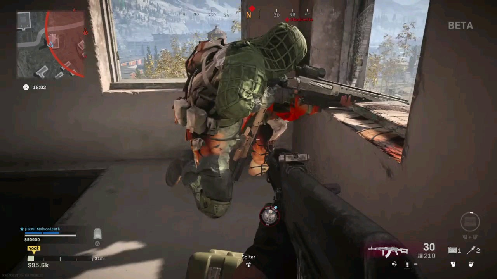

• Recon: If you want to be more of a camper, you can do a bunch of recons and camp in the middle of the last storm for guarantee wins.
• Claymores: If you have the worst gun skills, you can use a bunch of claymores to defend your house while camping.
• Riot Shield: You can be even more of a camper by using Riot Shield. They block shots, which guarantee your safety while you camping.
• C4: You can put C4s in staircases and acivate them when someone is one the way. You can also put them on shops or at others peoples loadout drops, for easy kills.
Guy camping in Warzone, Verdansk